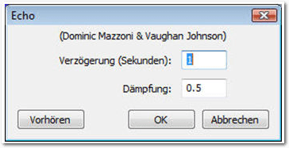

Zur Version ohne Bilder
Nicht nur die verschiedensten Funktionen für das Schneiden und Bearbeiten von Tonspuren stellt Audacity bereit, sondern die Audiosoftware erlaubt auch die Anwendung einer Vielzahl von Effekten auf die Tonspuren. Die Effektvielfalt ist sehr beachtlich. (weiterlesen)
Zum Inhaltsverzeichnis
Der September im Kernelrückblick
Anleitungen
FTS – Volltextsuche mit SQLite
Neues von Redis
Software
Test: RIVE – Das Twin-Stick-Metroidvania-Vermächtnis
Audacity 2.1 – Teil IV: Die besten Effekte
PSPP – eine freie Alternative zu SPSS
Magazin
Editorial
Leserbriefe
Veranstaltungen
Vorschau
Konventionen
Impressum
Zum Inhaltsverzeichnis
[1] http://www.freiesmagazin.de/freiesMagazin-2016-03
[2] http://www.pro-linux.de/
[3] https://games4linux.de/
Beitrag teilen Beitrag kommentieren
Zum Inhaltsverzeichnis
[1] https://lkml.org/lkml/2016/9/4/212
[2] https://lkml.org/lkml/2016/9/11/188
[3] https://de.wikipedia.org/wiki/InfiniBand
[4] https://lkml.org/lkml/2016/9/18/412
[5] https://de.wikipedia.org/wiki/Unified_Extensible_Firmware_Interface
[6] https://lkml.org/lkml/2016/9/25/259
[7] http://www.freiesmagazin.de/freiesMagazin-2011-09
[8] http://www.pro-linux.de/-0h215d7a
[9] https://de.wikipedia.org/wiki/Federal_Bureau_of_Investigation
[10] http://kernsec.org/wiki/index.php/Kernel_Self_Protection_Project
[11] https://heise.de/-3317830
[12] https://lwn.net/Articles/698827/
Beitrag teilen Beitrag kommentieren
Zum Inhaltsverzeichnis
[1] https://sqlite.org/fts3.html#section_1_1
[2] http://mjtsai.com/blog/2015/07/31/sqlite-fts5/
[3] https://www.sqlite.org/howtocompile.html
[4] https://sqlite.org/fts3.html#section_1
[5] https://sqlite.org/fts3.html#section_3
[6] https://de.wikipedia.org/wiki/Stemming
[7] https://de.wikipedia.org/wiki/Porter-Stemmer-Algorithmus
[8] https://www.sqlite.org/fts3.html
Beitrag teilen Beitrag kommentieren
Zum Inhaltsverzeichnis
[1] http://www.freiesmagazin.de/freiesMagazin-2012-09
[2] http://www.freiesmagazin.de/freiesMagazin-2014-04
[3] http://www.redis.io/topics/cluster-tutorial
[4] http://www.redis.io/commands/geodist
[5] http://www.redis.io/commands/georadius
[6] http://www.redis.io/commands/georadiusbymember
[7] http://www.redis.io/commands/geopos
[8] https://en.wikipedia.org/wiki/HyperLogLog
[9] https://de.wikipedia.org/wiki/Mächtigkeit_(Mathematik)
[10] http://antirez.com/news/75
[11] http://redis.io/commands/pfadd
[12] http://redis.io/commands/pfcount
[13] http://redis.io/commands/pfmerge
Beitrag teilen Beitrag kommentieren
Zum Inhaltsverzeichnis
Ob man hier lebend herauskommt?
Auf dem Weg durch das Raumschiff hat man so alle Hände voll zu tun. RIVE ist schnell, sehr schnell – vom Schwierigkeitsgrad ganz zu schweigen. Es gibt nämlich nur einen, und der lautet Schwer. Aber keine Panik. Stirbt man allzu oft an der selben Stelle, so schlägt einem das Spiel vor, in einen leichteren Schwierigkeitsgrad zu wechseln. Dieser bietet stärkere Waffen und auch der Panzer steckt mehr Treffer ein. Nachdem man sich die ersten Minuten mit der Steuerung vertraut gemacht hat, findet man den ersten Hack. Mit diesem ist es möglich, Reparatur-Drohnen zu hacken, damit diese dem Spieler folgen und ihn bei Bedarf heilen. Von diesen Hacks lassen sich im weiteren Verlauf noch mehr finden, die es ermöglichen, auch andere Gegner auf die eigene Seite zu ziehen. So kann man bestimmte Drohnen für sich arbeiten lassen, damit diese unterstützend zur Seite stehen – vorausgesetzt, der passende Hack befindet sich schon im Besitz von Roughshot. So kann man Roboter hacken, die wie ein zweites Maschinengewehr agieren, andere rammen Gegner oder bauen ein Antigravitationsfeld auf. Einen Haken hat die Sache aber: Die dadurch gewonnenen Zusatzfähigkeiten sind begrenzt. So ist man gezwungen, ständig neue Drohnen zu hacken, möchte man diese Vorzüge für sich nutzen. Es stehen aber nicht ständig Gegner zur Verfügung, die sich manipulieren lassen. Besonders zu Beginn des Spiels ist dies eher seltener der Fall, da man die nötigen Hacks für bestimmte Typen ja erst noch finden muss. Besonders am Anfang ist man also gut beraten, wenn man einfach auf alles schießt, was sich bewegt.
R-Type lässt grüßen …
Feuer frei.
Es geht heiß her – und zwar nonstop.
Diese Stellen sind in der Regel auch sehr fair gewählt. Lediglich ein paar wenige Speicherungen finden vor kurzen Dialogen statt, welche man sich immer wieder ansehen muss, sollte man vor dem nächsten Abschnitt das Zeitliche segnen. Aufgrund des knackigen Schwierigkeitsgrades ist das besonders bei ungeübten Spielern keine Seltenheit. Neben den erwähnten Bereichen gibt es auch noch Spielabschnitte außerhalb des Raumschiffes, in denen man schwerelos ist. Diese spielen sich dann wie ein Sidescroller-Shoot ‘em Up im Stil von Gradius oder R-Type. Gleich ganz am Anfang von RIVE darf man sich so übrigens durch ein Asteroidenfeld ballern. Im Verlauf des Spiels gibt es immer wieder Stellen, an denen man in einem bestimmten Bereich festgehalten wird und sich verschiedenen Wellen von Gegnern erwehren muss. Man ist also nicht ständig am Vorwärts-Preschen, sondern verweilt auch mal etwas länger an einem Ort. Diese Arenen kann man sich etwa so vorstellen wie bei Serious Sam, wenn plötzlich der Ausgang eines Bereiches versperrt wird und man erst alle Gegner eliminieren muss, damit sich ein Weg öffnet – nur eben zweidimensional. Dabei befindet man sich in so einem Fall keineswegs nur in einer Kammer und wartet auf die Horden. Diese Begegnungen sind ein fester Bestandteil des Spiels und glücklicherweise sehr unterschiedlich und abwechslungsreich gestaltet. Einmal muss man während der Gefechte heranfahrenden Zügen ausweichen, ein anderes Mal befindet man sich in einer großen Antigravitations-Blase, in der man herumschwimmt, bis man alle gegnerischen Wellen überstanden hat.
Das wird eng.
Daryls Kontrollzentrum.
Das Spiel bietet neben all der Härte aber auch gelegentliche Unterstützungen. Neben dem bereits erwähnten Easy-Mode, gibt es auch eine Zeitlupenfunktion, welche immer nach harten Treffern oder bei niedrigem Energiestand einsetzt. Dadurch lässt sich das eigene Fahrzeug gezielter steuern und das Ausweichen der verschiedenen Gefahren fällt aufgrund der reduzierten Geschwindigkeit leichter. Neben all der Action gibt es auch viel zu Lachen. Das Geplänkel zwischen Roughshot und Daryl ist wirklich sehr unterhaltsam und auch die Selbstgespräche des Hauptcharakters bieten genug Situationen zum Schmunzeln. Unter anderem sorgen auch die vielen Anspielungen für den gelungenen Humor. Film- als auch Spiele-Fans dürfen sich auf gute Unterhaltung freuen.
Grafisch und akustisch tolle Atmosphäre.
Fast wie Space Invaders …
[1] https://games4linux.de/test-rive-das-twin-stick-metroidvania-vermaechtnis-von-two-tribes/
[2] http://www.rivethegame.com/
[3] http://store.steampowered.com/app/278100/
[4] https://www.humblebundle.com/store/rive
Beitrag teilen Beitrag kommentieren
Zum Inhaltsverzeichnis
Der Ausblendeffekt wird meist am Ende einer Musikdatei angewendet.
Das Effekt-Menü stellt mit „Cross Fade In“ und „Cross Fade Out“ zwei weitere Effekte zum Ein- bzw. Ausblenden zur Verfügung, die insbesondere für das Überblenden von einer Audiodatei zur nächsten verwendet werden können. Diese beiden Effekte führen allerdings nicht, wie man auf den ersten Blick meinen könnte, eine automatische Überblendung zwischen zwei Tonspuren aus – das muss man schon selbst machen –, sondern realisieren lediglich ein An- und Abschwellen der Lautstärke.
Die Konfiguration eines Echos.
Sollte die Echo-Länge kürzer als die Auswahl sein, wird kein Echo erzeugt. Der Echo-Effekt erzeugt außerdem keine zusätzlichen Audio-Daten, die Datei wird also nicht automatisch verlängert. Aus diesem Grund muss man eine Ruhephase am Ende des Audio-Tracks anlegen, um dann das Echo anhängen zu können. In der Praxis markiert man die gewünschte Audiospur und betätigt die „Ende“-Taste, um zum Ende der Spur zu springen. Dann legt man mit „Erzeugen -> Stille“ eine Ruhephase an und bestimmt deren Länge. Bevor man den Echo-Effekt anwendet, stellt man sicher, dass man die Spur und die Pause markiert hat. Dann passt man die beiden Einstellungen an:
Das Ändern des Tempos eines Audio-Tracks.
Beim Einsatz des Effekts kann es vorkommen, dass zu Beginn und am Ende der Auswahl ein sehr kleiner Teil entfernt wird. Derlei Probleme können auch hörbar werden. In diesem Fall bietet es sich an, den Effekt „Tempo/Tonhöhe gleitend ändern“ zu verwenden.
[1] http://www.audacityteam.org/
[2] http://www.freiesmagazin.de/freiesMagazin-2016-06
[3] http://www.freiesmagazin.de/freiesMagazin-2016-07
[4] http://audacityteam.org/download/plugins
Beitrag teilen Beitrag kommentieren
Zum Inhaltsverzeichnis
PSPPIRE Dateneditor.
Der fertige Fragebogen-Entwurf.
Der „Variablentyp“ wird im Wesentlichen zwischen „Text“ („String“) und Zahlen („Numeric“ bzw. „Numerisch“) unterschieden. Die „Spaltenbreite“ („width“) gibt die Länge der Variable an, d. h. bei Zahlen den größtmöglichen Wert und bei Text die Anzahl der Zeichen. Unter „Label“ bzw. „Beschriftung“ wird der angezeigte Text in Tabellen oder Grafiken verstanden. Werden dazu numerische Werte interpretiert, kann dies in der nächsten Spalte „Wertelabel“ („Value Labels“) geschehen.
Wertelabel von Frage 5: „Bist Du getauft?“
Es müssen also bei der Dateneingabe lediglich die Zahlen 0, 1 oder 2 eingegeben werden, die mit den entsprechenden Antworttexten verknüpft sind. Dies kann man sehr bequem einstellen, wenn man auf das Icon „[…]“ klickt. Sonst ist vielleicht gerade nur noch das Feld für „Fehlende Werte“ („missing values“) interessant. Wird der Wert nicht angegeben, etwa weil ein Proband die Frage nicht beantwortet hat, kann hier ein Standardwert gesetzt werden. Das ist im Beispiel nicht erforderlich, da fehlende Werte auch als solche behandelt werden sollen.
Mögliche Eingaben des Fragebogens – übersetzt in lesbare Wertelabels.
Häufigkeiten am Beispiel „Schuljahr“.
Unter „Statistiken“ können verschiedene Kennzahlen ausgewählt werden. Mit dem Button „Diagramme“ können einfache Darstellungen der Ausgabe aktiviert werden. Hier kann die Option „Kreisdiagramm zeichnen“ benutzt werden.
Häufigkeiten als Kreisdiagramm.
Zunächst wird die entsprechende Häufigkeitstabelle mit absoluter Häufigkeit, Häufigkeit in Prozent und der kumulierten Prozente ausgegeben. Die gültigen Prozente sind hier identisch, da jeder Teilnehmer des Fragebogens die Frage beantwortet hat. Es folgt eine kleine Tabelle mit Mittelwert, Minimum und Maximum. Das Kreisdiagramm ist simpel und zeigt deutlich, dass man zum Plotten der Werte je nach Anspruch eher ein anderes Programm bemühen sollte. Kreuztabelle („Analysieren -> Deskriptive Statistiken -> Kreuztabellen“): Hier kann man die Schuljahre der Frage gegenüberstellen, ob die Schüler den Religionsunterricht interessant fanden.
Kreuztabelle in PSPPIRE.
Die Ausgabe und muss genau interpretiert werden. Einige Werte springen aber direkt ins Auge. So finden Siebtklässler das Thema „Taufe“ im Religionsunterricht zu 88,9% eher spannend, während alle befragten Zwölftklässler das Thema „eher langweilig“ finden. Schaut man sich die absoluten Zahlen an (nur drei befragte Zwölftklässler), relativiert sich das Ergebnis wieder.
Auswertung der Kreuztabelle.
[1] https://de.wikipedia.org/wiki/SPSS
[2] https://de.wikipedia.org/wiki/PSPP_(Software)
[3] https://www.gnu.org/software/pspp/
[4] https://www.gnu.org/licenses/gpl
[5] https://www.gnu.org/software/pspp/manual/pspp.html
[6] https://www.r-project.org/
[7] https://www.gnu.org/software/octave/
Beitrag teilen Beitrag kommentieren
Zum Inhaltsverzeichnis
 zur Verfügung - wir freuen uns über Lob,
Kritik und Anregungen zum Magazin.
An dieser Stelle möchten wir alle Leser ausdrücklich ermuntern,
uns auch zu schreiben, was nicht so gut gefällt. Wir bekommen
sehr viel Lob (was uns natürlich freut), aber vor allem durch
Kritik und neue Ideen können wir uns verbessern.
zur Verfügung - wir freuen uns über Lob,
Kritik und Anregungen zum Magazin.
An dieser Stelle möchten wir alle Leser ausdrücklich ermuntern,
uns auch zu schreiben, was nicht so gut gefällt. Wir bekommen
sehr viel Lob (was uns natürlich freut), aber vor allem durch
Kritik und neue Ideen können wir uns verbessern.
Gerhard Bicker <- Vielen Dank für das Lob. Wir freuen uns immer, wenn wir hören, dass das Magazin gut ankommt. Wir haben Ihren Wunsch an Herrn Knof weitergeleitet. Er verweist für weitere Beispiele zur Bildbearbeitung auf die Sammlung auf der ImageMagick-Webseite [1]. ImageMagick bietet für viele Programmiersprachen Schnittstellen an [2]. Für Python ist dies PythonMagick, was bei den meisten Distributionen enthalten sein sollte. Bezüglich der Buchverlosung werden wir überlegen, wie wir dies bei der nächsten Ausgabe handhaben werden. Unter Umständen verlängern wir auf zwei oder drei Wochen. In der aktuellen Ausgabe gab es leider keine Buchrezensionen.
Dominik Wagenführ
Tronde <- Ich denke, das ist zu früh. Die Entwicklungen in der Hinsicht laufen eher schleppend. Zumindest ist mir in dem Jahr kein neues Programm untergekommen, was damit wirbt, den Übergang von LaTeX zum E-Book zu beherrschen. Hier würde ich also eher noch ein weiteres Jahr warten, da es auch mit viel Aufwand verbunden ist, die Programme immer so ausführlich zu testen.
Dominik Wagenführ
Dominik Wagenführ Links
[1] http://www.freiesmagazin.de/freiesMagazin-2015-07
[2] http://www.imagemagick.org/Usage/
[3] http://www.imagemagick.org/script/api.php
Die Redaktion behält sich vor, Leserbriefe gegebenenfalls zu kürzen. Redaktionelle Ergänzungen finden sich in eckigen Klammern. Beitrag teilen Beitrag kommentieren
Zum Inhaltsverzeichnis
(Alle Angaben ohne Gewähr!)
Sie kennen eine Linux-Messe, welche noch nicht auf der Liste zu
finden ist? Dann schreiben Sie eine E-Mail mit den Informationen zu
Datum und Ort an .
Zum Inhaltsverzeichnis
Zum Inhaltsverzeichnis
Erscheinungsdatum: 2. Oktober 2016
Dieses Magazin wurde mit LaTeX erstellt. Mit vollem Namen
gekennzeichnete Beiträge geben nicht notwendigerweise die Meinung
der Redaktion wieder. Wenn Sie freiesMagazin ausdrucken möchten, dann
denken Sie bitte an die Umwelt und drucken Sie nur im Notfall. Die
Bäume werden es Ihnen danken. ;-)
Soweit nicht anders angegeben, stehen alle Artikel, Beiträge und Bilder in freiesMagazin unter der Creative-Commons-Lizenz CC-BY-SA 4.0 International. Das Copyright liegt beim jeweiligen Autor. Die Kommentar- und Empfehlen-Icons wurden von Maren Hachmann erstellt und unterliegen ebenfalls der Creative-Commons-Lizenz CC-BY-SA 4.0 International. freiesMagazin unterliegt als Gesamtwerk der Creative-Commons-Lizenz CC-BY-SA 4.0 Unported mit Ausnahme der Inhalte, die unter einer anderen Lizenz hierin veröffentlicht werden. Das Copyright liegt bei Dominik Wagenführ. Es wird erlaubt, das Werk/die Werke unter den Bestimmungen der Creative-Commons-Lizenz zu kopieren, zu verteilen und/oder zu modifizieren. Die xkcd-Comics stehen separat unter der Creative-Commons-Lizenz CC-BY-NC 2.5 Generic. Das Copyright liegt bei Randall Munroe.
File translated from TEX by TTH, version 4.08.
On 2 Oct 2016, 14:02.
freiesMagazin Oktober 2016
(ISSN 1867-7991)Themen dieser Ausgabe sind u. a.
Entwicklerstudio Two Tribes streicht die Segel, denn RIVE soll der letzte Titel der niederländischen Spieleschmiede sein. Mit diesem Twin-Stick-Shooter möchte sich das Team einen lang gehegten Wunsch verwirklichen und nochmal ordentlich auf den Putz hauen. (weiterlesen)Nicht nur die verschiedensten Funktionen für das Schneiden und Bearbeiten von Tonspuren stellt Audacity bereit, sondern die Audiosoftware erlaubt auch die Anwendung einer Vielzahl von Effekten auf die Tonspuren. Die Effektvielfalt ist sehr beachtlich. (weiterlesen)
Zum Inhaltsverzeichnis
Inhalt
Linux allgemeinDer September im Kernelrückblick
Anleitungen
FTS – Volltextsuche mit SQLite
Neues von Redis
Software
Test: RIVE – Das Twin-Stick-Metroidvania-Vermächtnis
Audacity 2.1 – Teil IV: Die besten Effekte
PSPP – eine freie Alternative zu SPSS
Magazin
Editorial
Leserbriefe
Veranstaltungen
Vorschau
Konventionen
Impressum
Zum Inhaltsverzeichnis
Editorial
10 Jahre freiesMagazin … und Aus!
Nanu, ein Déjà-vu? Ja, denn so lautete die Überschrift zumindest teilweise bereits vor sieben Monaten im Editorial der Märzausgabe [1]. Und leider wird es auch bei dieser Zahl bleiben, den elften Geburtstag wird das Magazin nicht mehr erleben. Seit bereits 127 Monaten existiert freiesMagazin und veröffentlicht Monat für Monat ohne Unterlass eine Ausgabe. Insgesamt 1230 Artikel wurde im Magazin von 195 verschiedenen Autoren geschrieben (die News aus den Anfangstagen nicht mitgezählt). Das ist eine stolze Summe, die sich definitiv sehen lassen kann. Eine Summe, auf die das freiesMagazin-Team stolz ist – und umso betrübter, dass diese Zahlen bis zum Jahresende nur noch gering wachsen werden. Wir haben versucht, mit der Zeit zu gehen – erst HTML, dann EPUB. Und gab es auch anfangs ein paar mehr Leser, sieht man in den letzten Jahren und Monaten eine Stagnation. Das heißt, das Interesse am Magazin schwindet – auch wenn 8700 Leser (PDF-, HTML- und EPUB-Ausgabe der Augustausgabe) natürlich immer noch keine kleine Zahl sind. Dennoch geht der Trend abwärts – was wir auch an den Artikeln sehen. Sicherlich gibt es jedes Jahr immer wieder Phasen, in denen mal mehr und mal weniger Artikel von den freiwilligen Autoren bei uns ankommen, aber die letzten Monate zeigen, dass wir kaum noch eigenständige Inhalte, d. h. Artikel, die noch nicht vorher irgendwo anders erschienen sind, präsentieren können. Dank der guten Zusammenarbeit mit Pro-Linux [2] und zuletzt Games4Linux [3] konnten wir immerhin die Ausgaben noch etwas füllen. Aber nicht nur Leser und Autoren schwinden, auch die Zeit bleibt nicht stehen. Aus dem Gründungsteam von freiesMagazin ist bereits seit sieben Jahren niemand mehr an Bord. Der Dienstälteste und aktuelle Chefredakteur Dominik Wagenführ hatte letzten Monat sein zehnjähriges Jubiläum. Und so viel Spaß es auch macht, jeden Monat ein Magazin zu veröffentlichen, die Welt dreht sich weiter, das Leben ändert sich und Prioritäten mit ihm. So findet der Chefred – und Schreiber dieser Zeilen – kaum noch den Freiraum, um sich richtig um die Veröffentlichungen, die Kommunikation mit Verlagen oder Autoren und die LaTeX-Infrastruktur des Magazins zu kümmern. Dank der Unterstützung des Redaktionskollegen Kai Welke und des gesamten freiesMagazin-Teams ist das aber keinem außerhalb der eigenen Reihen aufgefallen. Wir haben intern überlegt, wie wir mit diesem Umstand umgehen. Fortführung unter neuer Flagge, gegebenenfalls mit mehr Elan und neuen Ideen? Oder einfach nichts tun und das Magazin tröpfchenweise in der Bedeutungslosigkeit versinken lassen? Oder gar alles über den Haufen werfen und irgendwie mit einem neuen Konzept neu beginnen? Irgendwie konnte sich niemand für eine der Möglichkeiten begeistern oder es fehlte die Zeit. Aus dem Grund schließen wir zu einem definierten Zeitpunkt die Pforten. Im Dezember wird die letzte Ausgabe von freiesMagazin vom Stapel gelassen. Wir hoffen, dass wir bis dahin noch ein paar interessante Inhalte aus dem Hut zaubern können. Ein paar angebotene Artikel von Autoren stehen noch aus, die vielleicht bis dahin eintreffen. Und ein oder zwei Rezensionen gibt es auch noch zum Lesen. Wir denken aber, dass das Magazin mit einem harten Schnitt besser in Erinnerung bleiben wird als wenn es vor sich dahinvegetiert. Trotz des Schocks wünschen wir Ihnen viel Spaß mit der neuen Ausgabe. Ihre freiesMagazin-Redaktion Links[1] http://www.freiesmagazin.de/freiesMagazin-2016-03
[2] http://www.pro-linux.de/
[3] https://games4linux.de/
Beitrag teilen Beitrag kommentieren
Zum Inhaltsverzeichnis
Der September im Kernelrückblick
von Mathias Menzer Basis aller Distributionen ist der Linux-Kernel, der fortwährend weiterentwickelt wird. Welche Geräte in einem halben Jahr unterstützt werden und welche Funktionen neu hinzukommen, erfährt man, wenn man den aktuellen Entwickler-Kernel im Auge behält.Die Entwicklung Linux 4.8
Die vierte Entwicklerversion hatte relativ wenig Änderungen erfahren, sodass die Hoffnung auf eine frühe Beruhigung der Entwicklung aufkam. Doch das war leider Fehlanzeige, denn die fünfte Version, -rc5 [1] hatte wieder 20% mehr Änderungen im Gepäck und lag damit eigentlich im Normalbereich für diesen Entwicklungszeitpunkt. Dabei kommen doch überwiegend kleinere Korrekturen zusammen, wobei die größte einzelne Änderung das Entfernen des Treibers für einen Umgebungslichtsensor ist, der jedoch bereits durch einen neueren, verbesserten Treiber ersetzt wurde. Mit Linux 4.8-rc6 [2] kehrte wieder etwas mehr Ruhe ein – vorübergehend. Den größten Anteil hatte dabei der Infiniband [3]-Bereich, wo Verbesserungen unter anderem für die Fehlersuche vorgenommen und Validitätsprüfungen für einzelne Geräte implementiert wurden. Weitere umfangreiche Änderungen waren Korrekturen an den Kryptographie-Modulen für ARMs CoreLink CCN-Signalprozessoren. Im Auf und Ab des aktuellen Entwicklungszyklus stellte die siebte Entwicklerversion [4] wieder eine der Spitzen dar mit 50% mehr Änderungen als der Vorgänger. Doch auch diesmal entfiel der Bärenanteil der Änderungen auf kleinere Fehlerkorrekturen und Verbesserungen, die nur wenige Quelltextzeilen betreffen. Etwas umfangreicher fallen Änderungen aus, die für einen sauberen Abschluss des Boot-Vorgangs auf x86-Systemen sorgen sollen. EFI Boot Stub, eine Komponente, die den direkten Start des Linux-Kernels durch UEFI [5] ohne Umweg über einen UEFI Bootloader erlaubt, schloss bislang den Start nicht entsprechend der Spezifikationen ab, welche das Abfangen bestimmter Fehler sowie das Aufräumen spezieller Speicherbereiche vorschreiben. Einige entsprechenden Patches beheben dies nun. Weitere Änderungen betreffen den Netzwerkbereich, der eine Vielzahl kleinerer Patches aufweist, die teilweise die Freigabe von -rc6 knapp verpasst hatten. Darunter finden sich Korrekturen an einigen Treibern. Linux 4.8-rc8 [6] soll nun nach Torvalds Willen die letzte Entwicklerversion sein, immerhin schmolz der Umfang unter 220 Patches und liegt damit höher als bei den meisten letzten RCs. Dennoch sehen diese Änderungen nicht wirklich beängstigend aus; die umfangreichste davon schob lediglich einige Funktionen innerhalb eines Ethernet-Treibers von Realtek innerhalb der Datei herum. Die weiteren Änderungen stellen dann eher kleinere Korrekturen, in erster Linie im Bereich der Netzwerk-Treiber, Dateisysteme und der Speicherverwaltung dar. Sofern keine plötzlichen Probleme auftauchen, dürfte am ersten Oktoberwochenende mit der Veröffentlichung von Linux 4.8 zu rechnen sein.Mutmaßlicher kernel.org-Einbrecher festgenommen
Im August 2011 entdeckten die Betreuer der Server von kernel.org, dass auf die Server unbefugt zugegriffen wurde um Dienste zu manipulieren und einen Trojaner zu installieren (siehe „Der August im Kernelrückblick“, freiesMagazin 09/2011 [7]). Dieser Einbruch verzögerte die Entwicklung des damaligen Kernels 3.1 für einige Zeit und führte letztlich zu einer neuen Architektur der kernel.org-Server. Nun, fünf Jahre später, scheint der Schuldige gefunden und festgenommen worden zu sein [8]. Den kalifornischen Behörden zufolge führten Ermittlungen des FBI [9] zur Festnahme des 27-jährigen Donald Austin. Er wird beschuldigt, unerlaubt in Computer eingedrungen zu sein, die von der „Linux Kernel Organization“ und der Linux Foundation betrieben werden und dabei Schadsoftware installiert zu haben. Er wurde am 28. August festgenommen und einen Tag später gegen Kaution wieder freigelassen. Die Verhandlung soll Ende September beginnen.Sicherheit des Kernels
Einbrecher kommen meist über Schwachstellen ins System und der Linux-Kernel kann als Hauptverwalter der Systemresourcen einiges dafür tun, um deren Ausnutzung zu erschweren oder direkt zu unterbinden. Dies trifft insbesondere zu, wenn Lücken im Kernel oder einem seiner unzähligen Untersysteme bestehen. Das vor einem Jahr ins Leben gerufene „Kernel Self Protection Project“ [10] will hier ansetzen, indem verschiedene Mechanismen eingebaut werden, die das Ausnutzen von Schwachstellen unterbinden sollen. Das KSPP geht nämlich davon aus, dass bei der Entwicklung Fehler passieren und die daraus resultierenden Schwachstellen bisweilen recht lange unentdeckt im Kernel-Code verbleiben können. Und noch länger sind einige solcher Systeme dann in Betrieb, ohne jemals eine Aktualisierung zu erfahren. Im Hinblick auf Geräte des derzeit oft genannten „Internet of Things“, die häufig mit Linux betrieben werden, ist dies ein wichtiges Thema, insbesondere da bereits ein IoT-Botnet nachgewiesen wurde [11]. Also sollte der Kernel über eigene Methoden verfügen, um im Fehlerfall Speicherbereiche, Variablen oder Funktionsaufrufe gegen unbefugte Nutzung abzusichern und damit den Schaden – zumindest in sicherheitstechnischer Sicht – zu begrenzen. Während des Linux Security Summit in Toronto gab Kees Cook einen Einblick in die Arbeit des Projekts [12]. So sind bereits seit Linux 4.3 mehrere Änderungen eingeflossen, die beispielsweise die Zuteilung der Speicherbereiche zu einzelnen Prozessen „erwürfeln“, um im Falle eines Speicherüberlaufs keine gezielt Übernahme des Speichers eines bestimmten Prozesses zu ermöglichen. Letztlich liegt die größte Herausforderung jedoch in der Zusammenarbeit von Spezialisten für Sicherheit und den Kernel-Entwicklern. Letztere seinen laut Cook recht konservativ, sodass neue Entwicklungen zum Teil mehrere Anläufe benötigen, bis sie aufgenommen werden. Hier sind dann geduldige (Security-) Entwickler gefragt, die die Patches für die Kernel-Entwicklergemeinde entsprechend aufbereiten und deren Sinn verständlich machen. Links[1] https://lkml.org/lkml/2016/9/4/212
[2] https://lkml.org/lkml/2016/9/11/188
[3] https://de.wikipedia.org/wiki/InfiniBand
[4] https://lkml.org/lkml/2016/9/18/412
[5] https://de.wikipedia.org/wiki/Unified_Extensible_Firmware_Interface
[6] https://lkml.org/lkml/2016/9/25/259
[7] http://www.freiesmagazin.de/freiesMagazin-2011-09
[8] http://www.pro-linux.de/-0h215d7a
[9] https://de.wikipedia.org/wiki/Federal_Bureau_of_Investigation
[10] http://kernsec.org/wiki/index.php/Kernel_Self_Protection_Project
[11] https://heise.de/-3317830
[12] https://lwn.net/Articles/698827/
Autoreninformation |
| Mathias Menzer (Webseite) behält die Entwicklung des Linux-Kernels im Blick, um über kommende Funktionen von Linux auf dem Laufenden zu bleiben und immer mit interessanten Abkürzungen und komplizierten Begriffen dienen zu können. |
Beitrag teilen Beitrag kommentieren
Zum Inhaltsverzeichnis
FTS – Volltextsuche mit SQLite
von Jochen Schnelle Die relationale Datenbank SQLite wird aufgrund des „Lite“ im Namen in Sachen Funktionsumfang gerne unterschätzt. Zu einer der weniger bekannten, aber recht praktischen Funktionalitäten gehört die Möglichkeit der Volltextsuche mit SQLite. Diese wird hier im Artikel vorgestellt. Redaktioneller Hinweis: Dieser Artikel wurde auf Basis von SQLite 3.11.0 geschrieben, wobei die Befehle auch unter anderen SQLite3-Versionen funktionieren sollten. Der SQLite-Prompt in diesem Artikel ist sqlite> und muss nicht mit eingegeben werden. Die Volltextsuche in SQLite wird über die virtuellen Tabellenmodule Namens „FTS“ realisiert, wobei FTS einfach für „full text search“ steht. Es gibt in der Tat drei verschiedene Implementierungen: FTS3, FTS4 und FTS5. Der Hauptunterschied liegt dabei „im Hintergrund“, also wie SQLite die Daten intern strukturiert. Die hier gezeigten Beispiele funktionieren mit allen drei Implementierungen. Wer sich im Detail für die Unterschiede interessiert, kann diese zwischen FTS3 und 4 in der SQLite Dokumentation nachlesen [1] und die zwischen FTS3/4 und 5 in einem Blogbeitrag [2]. FTS3, 4 und 5 sind im Quellcode von SQLite standardmäßig enthalten, müssen aber nicht zwingend mit einkompiliert sein. Bei der in den Paketquellen von Ubuntu 16.04 enthaltenen Version 3.11.0 von SQLite3 ist z. B. FTS3 und FTS4 enthalten. Ob das FTS-Modul verfügbar ist, lässt sich einfach testen: man öffnet die SQLite Shell und führt folgenden SQL-Befehl aus:
sqlite> CREATE VIRTUAL TABLE data using fts3();
Erscheint direkt wieder der Prompt, dann ist FTS3 (und auch 4) verfügbar.
Erscheint eine Fehlermeldung, ist FTS nicht enthalten und man muss sich SQLite
selber kompilieren [3]. FTS3 und 4
sind nicht getrennt, beim Kompilieren werden immer beide Module erstellt.
Was machen die FTS-Module eigentlich?
Wie oben bereits erwähnt wird die Volltextsuche über virtuelle Tabellen, die FTS-Tabellen, realisiert. Vereinfacht gesagt „zerlegt“ SQLite den Text dabei in einzelne Worte (im SQLite Kontext „Tokens“ genannt) und indiziert diese. Dadurch ist die Suche nach einem oder mehreren Worten im indizierten Text erheblich schneller und effizienter als eine „klassische“ Suche mit „LIKE“, weil nicht jeder einzelne Datensatz komplett durchlaufen werden muss. In der Dokumentation von SQLite wird ein Beispiel einer Abfrage mit einer sehr großen Textmenge aufgeführt, bei der die Suche nach einem Wort mit FTS3 um den Faktor 750 (!) schneller ist eine Suche mit „LIKE“ [4].FTS-Tabellen anlegen und abfragen
Das Anlegen einer FTS3-Tabelle erfolgt mit dem Befehl:
sqlite> CREATE VIRTUAL TABLE data using fts3();
Dabei wird die (virtuelle) Tabelle data angelegt, die die Spalte content
enthält. Letztere wird standardmäßig angelegt, wenn keine Spaltennamen angegeben
werden. Natürlich geht dies auch. Im folgenden Beispiel wird die Tabelle
data2 angelegt, die die Spalten headline und main_text enthält:
sqlite> CREATE VIRTUAL TABLE data2 using fts3(headline, main_text);
Werden Datentypen für die Spalten angegeben, so werden diese von SQLite
komplett ignoriert. Möchte man lieber FTS4 oder FTS5 nutzen, dann muss man in
den obigen Beispielen einfach „fts3“ durch „fts4“ oder „fts5“ ersetzen.
Im folgenden wird weiter mit der einspaltigen Tabelle „data“ gearbeitet. Dieser
werden zunächst vier Zeilen mittels INSERT INTO ... VALUES hinzugefügt:
sqlite> INSERT INTO data(content) VALUES ('Yesterday I played football.');
sqlite> INSERT INTO data(content) VALUES ('Today, I am playing again.');
sqlite> INSERT INTO data(content) VALUES ('Playing a lot helps me to stay fit.');
sqlite> INSERT INTO data(content) VALUES ('Tomorrow I will do something different.');
Die Abfrage erfolgt wie bei SQL üblich mit SELECT, neu ist lediglich die
MATCH Anweisung:
sqlite> INSERT INTO data(content) VALUES ('Today, I am playing again.');
sqlite> INSERT INTO data(content) VALUES ('Playing a lot helps me to stay fit.');
sqlite> INSERT INTO data(content) VALUES ('Tomorrow I will do something different.');
sqlite> SELECT * FROM data WHERE content MATCH 'playing';
Today, I am playing again.
Playing a lot helps me to stay fit.
Die Suche nach „playing“ zeigt wie erwartet die beiden Datensätze an, in denen
das Wort „playing“ vorkommt. Wie auch zu sehen ist, spielt die Groß- oder
Kleinschreibung bei der Suche keine Rolle. Beim Befüllen der virtuellen
FTS-Tabelle normalisiert SQLite alle Worte sowieso komplett auf
Kleinschreibung.
Today, I am playing again.
Playing a lot helps me to stay fit.
Weitere Suchoptionen
Außer der Suche nach einzelnen, ganzen Wörtern kennt SQLite noch eine Reihe weiterer Optionen:
sqlite> SELECT * FROM data WHERE content MATCH 'play*';
Yesterday I played football.
Today, I am playing again.
Playing a lot helps me to stay fit.
sqlite> SELECT * FROM data WHERE content MATCH 'playing AND again';
Today, I am playing again.
sqlite> SELECT * FROM data WHERE content MATCH 'playing NOT again';
Playing a lot helps me to stay fit.
In der ersten Abfrage wird nach Worten gesucht, die mit „play“ anfangen, die
zweite und dritte
Abfrage zeigen eine Abfrage mit einer UND- bzw. einer
NICHT-Verknüpfung. SQLite kennt
weiterhin auch noch eine Verknüpfung mit OR.
Außerdem kennt SQLite noch die Suchoption NEAR. So würde z. B.
die folgende Abfrage
Yesterday I played football.
Today, I am playing again.
Playing a lot helps me to stay fit.
sqlite> SELECT * FROM data WHERE content MATCH 'playing AND again';
Today, I am playing again.
sqlite> SELECT * FROM data WHERE content MATCH 'playing NOT again';
Playing a lot helps me to stay fit.
sqlite> SELECT * FROM data WHERE content MATCH 'foo NEAR/3 bar';
nur Datensätze anzeigen, in denen die Worte „foo“ und „bar“ vorkommen und der
Abstand im Text zwischen den beiden Worten drei oder weniger Worte beträgt.
Würde die Angabe von „/3“ weggelassen, dann sucht die Datenbank automatisch mit
einem Abstand von maximal 10 Worten.
Ein komplette Übersicht über alle Suchmöglichkeiten sind in der Dokumentation
zu finden [5].
Andere Tokenizer nutzen
Wie weiter oben bereits erwähnt, „zerlegt“ SQLite beim Einsatz von FTS den Text in einzelne Worte, die Tokens. Standardmäßig ist jedes Wort ein Token, auch dann, wenn Worte den gleichen Stamm haben wie z. B. „played“ und „playing“. SQLite bietet aber die Möglichkeit, einen Stemmer [6] einzusetzen, der die Wörter auf die Normalform reduziert. Das funktioniert unter Angabe der Option „tokenize=porter“ beim Anlegen der FTS-Tabelle. Dann kommt der Porter Stemming Algorithmus [7] zum Einsatz. Mit den folgenden Befehlen wird die Tabelle data_stem angelegt, als Tokenizer der Porter Stemmer vorgegeben und drei Datensätze eingefügt:
sqlite> CREATE VIRTUAL TABLE data_stem USING fts3(tokenize=porter);
sqlite> INSERT INTO data_stem(content) VALUES ('Yesterday I played football');
sqlite> INSERT INTO data_stem(content) VALUES ('Today, I am playing again');
sqlite> INSERT INTO data_stem(content) VALUES ('Tomorrow I will do something different');
Die Suche nach „play“ findet jetzt zwei Einträge, die passen:
sqlite> INSERT INTO data_stem(content) VALUES ('Yesterday I played football');
sqlite> INSERT INTO data_stem(content) VALUES ('Today, I am playing again');
sqlite> INSERT INTO data_stem(content) VALUES ('Tomorrow I will do something different');
sqlite> SELECT * FROM data_stem WHERE content MATCH 'play';
Yesterday I played football
Today, I am playing again
da sowohl „played“ als auch „playing“ von der Grundform „play“ abgeleitet sind.
Leider funktioniert der Stemmer nur mit Englisch. Werden z. B. deutsche Sätze eingefügt, erfolgt das Stemming
leider nicht zuverlässig.
Yesterday I played football
Today, I am playing again
Weitere Möglichkeiten
Die hier im Artikel gezeigten Möglichkeiten der Volltextsuche mittels FTS-Tabellen in SQLite zeigen nur einen Teil der Funktionalität. Die Dokumentation zu FTS3/4 ist aber äußerst umfangreich, enthält sehr viele Beispiele und ist durchaus lesenswert, wenn man sich näher mit SQLite und FTS beschäftigen möchte [8].Fazit
SQLite bietet neben den „normalen“ Funktionen einer relationalen Datenbank mit FTS auch eine Möglichkeit zur Volltextsuche. Die Nutzung dieser Funktion ist nicht weiter schwierig, die Funktionalität für die meisten Aufgaben völlig ausreichend und die Suche ist wesentlich performanter als eine klassische Abfrage mit konventionellen SQL-Befehlen. Links[1] https://sqlite.org/fts3.html#section_1_1
[2] http://mjtsai.com/blog/2015/07/31/sqlite-fts5/
[3] https://www.sqlite.org/howtocompile.html
[4] https://sqlite.org/fts3.html#section_1
[5] https://sqlite.org/fts3.html#section_3
[6] https://de.wikipedia.org/wiki/Stemming
[7] https://de.wikipedia.org/wiki/Porter-Stemmer-Algorithmus
[8] https://www.sqlite.org/fts3.html
Autoreninformation |
| Jochen Schnelle (Webseite) nutzt SQLite Datenbanken selber für diverse Projekte. |
Beitrag teilen Beitrag kommentieren
Zum Inhaltsverzeichnis
Neues von Redis
von Jochen Schnelle In der früheren Ausgabe von freiesMagazin 09/2012 [1] gab es einen ausführlichen Artikel über Redis 2.4, in freiesMagazin 04/2014 wurden einige Neuerungen bis Version 2.8.5 vorgestellt [2]. Inzwischen ist Redis bei Version 3.2 angekommen. Dieser Artikel beschreibt die Neuerungen des performanten Key-Value-Stores. Inhaltlich sind die oben genannten Artikel immer noch gültig, in den neueren Versionen von Redis wurden „nur“ Ergänzungen und Erweiterungen vorgenommen. Auch die Installation funktioniert noch genauso, wie seinerzeit in der Ausgabe von 2012 beschrieben. Hinweis: Dieser Artikel wurde auf Basis von Redis 3.2.3 geschrieben. Der Redis-Prompt in diesem Artikel ist 127.0.0.1:6379> und muss nicht mit eingegeben werden.Clusterfähigkeit
Eines der Hauptentwicklungsziele für Redis in der Version 3 war, dass die Datenbank clusterfähig wird. Diese Funktionalität war dann auch in der ersten stabilen Version 3.0.0, welche am 1.4.2015 offiziell erschien, vorhanden. Da der Clusterbetrieb für den „Hausgebrauch“ von Redis eher uninteressant ist, wird darauf hier im Artikel nicht weiter eingegangen. In der offiziellen Dokumentation von Redis findet man aber ein ausführliches Tutorial [3] zum Clusterbetrieb von Redis.Geodaten
Mit der Redis-Version 3.2 erhielt die Datenbank die Fähigkeit, mit Geodaten umzugehen und Dinge wie Umkreissuche und Abstandsberechnung durchzuführen. Die Geodaten verwenden intern den Datentyp „sorted set“. Geodaten bestehen immer aus den drei Angaben Längengrad, Breitengrad und Name, wobei Länge und Breite in Dezimalgrad angegeben werden müssen. Der Name ist ein frei wählbarer String. Im folgenden Beispiel werden die Koordinaten dreier Städte im Ruhrgebiet in Redis unter dem Schlüssel coords gespeichert:
127.0.0.1:6379> GEOADD coords 7.2162363 51.4818445 "Bochum"
(integer) 1
127.0.0.1:6379> GEOADD coords 7.0857172 51.517744 "Gelsenkirchen" 6.7623293 51.4344079 "Duisburg"
(integer) 2
Wie im zweiten Befehl des Beispiels zu sehen ist, kann man auch die Daten für
mehrere Punkte gleichzeitig hinzufügen.
Mit dem Befehl GEODIST kann man den Abstand zwischen zwei Punkten ermitteln:
(integer) 1
127.0.0.1:6379> GEOADD coords 7.0857172 51.517744 "Gelsenkirchen" 6.7623293 51.4344079 "Duisburg"
(integer) 2
127.0.0.1:6379> GEODIST coords Bochum Duisburg
"31896.6070"
Der Abstand zwischen den für Bochum und Duisburg hinterlegten Koordinaten
beträgt also 31896,6070 Meter. Redis geht für die Berechnung davon aus, dass
die Erde exakt kugelförmig ist und es kommt die trigonometrische Funktion
„Semiversus“ (englisch: „Haversine“) zur Berechnung des Abstands zum Einsatz.
Dies ist für „normale“ Abstandsberechnung (wie z. B. „Wie weit sind zwei Städte
entfernt?“) vollkommen ausreichend, aber eben nicht völlig exakt. Besonders
dann nicht, wenn eine der Koordinaten nahe an einem der Pole liegt. Die
Dokumentation von Redis zur Funktion
GEODIST [4] gibt eine maximale
Ungenauigkeit von 0,5% an.
Im obigen Beispiel ist der Abstand in Metern angegeben, was die Standardeinheit
der Ausgabe ist. Man kann sich das Ergebnis aber auch in einer anderen Einheit
ausgeben lassen, z. B. in Kilometern sieht es folgendermaßen aus:
"31896.6070"
127.0.0.1:6379> GEODIST coords Bochum Duisburg km
"31.8966"
Redis kennt auch zwei Funktionen die zur Umkreissuche verwendet werden können:
GEORADIUS [5] und
GEORADIUSBYMEMBER [6]. Mit
GEORADIUS kann man alle Punkte in der Datenbank suchen, die in einem
vorzugebenden Radius um einen Punkt liegen:
"31.8966"
127.0.0.1:6379> GEORADIUS coords 7.215 51.5 10 km
1) "Gelsenkirchen"
2) "Bochum"
In diesem Beispiel werden alle Punkte gesucht, die im Umkreis von 10 km um die
Koordinaten 7.215 51.5 liegen.
Mit GEORADIUSBYMEMBER kann man im Umkreis um einen Punkt suchen, der in
der Datenbank hinterlegt ist:
1) "Gelsenkirchen"
2) "Bochum"
127.0.0.1:6379> GEORADIUSBYMEMBER coords Gelsenkirchen 12000 m
1) "Gelsenkirchen"
2) "Bochum"
Hier werden alle Punkte gesucht, die einen Abstand von maximale 12000 Metern
von Gelsenkirchen haben. Wie in der Ausgabe zu sehen ist, gehört der
Ausgangspunkt auch zum Ergebnis.
GEORADIUSBYMEMBER kennt einige Optionen für die Ausgabe. So kann man sich
z. B. die Koordinaten der gefundenen Punkte zusätzlich mit ausgeben lassen:
1) "Gelsenkirchen"
2) "Bochum"
127.0.0.1:6379> GEORADIUSBYMEMBER coords Gelsenkirchen 12 km WITHCOORD
1) 1) "Gelsenkirchen"
2) 1) "7.08571761846542358"
2) "51.51774497695259925"
2) 1) "Bochum"
2) 1) "7.21623390913009644"
2) "51.48184572117288837"
Möchte man einfach die Koordinaten zu einem Punkt wissen, dann nutzt man den
Befehl GEOPOS [7]:
1) 1) "Gelsenkirchen"
2) 1) "7.08571761846542358"
2) "51.51774497695259925"
2) 1) "Bochum"
2) 1) "7.21623390913009644"
2) "51.48184572117288837"
127.0.0.1:6379> GEOPOS coords Duisburg
1) 1) "6.76232904195785522"
2) "51.43440841467585756"
1) 1) "6.76232904195785522"
2) "51.43440841467585756"
HyperLogLog
Mit Redis 2.8.9 wurde der Datentyp HyperLogLog neu eingeführt. Hinter dem etwas seltsamen klingenden Namen [8] verbirgt sich ein Algorithmus, mit der die Kardinalität [9] eines Datensatzes festgestellt werden kann. Oder anders einfach ausgedrückt: es wird gezählt, wie viele verschiedene Elemente ein Datensatz hat. Der entscheidender Vorteil von HyperLogLog gegenüber dem Zählen der verschiedenen Elemente in einer „normalen“ Liste ist: Beim HyperLogLog werden maximal 12 kB Speicher benötigt - egal, wie viele Elemente der Datensatz enthält. Salvatore Sanfilippo, der Hauptentwickler von Redis, hat zu diesem Thema einen sehr ausführlichen Blogeintrag verfasst [10], der auch viele Details zur Implementierung und zu Vorteilen von HyperLogLog enthält. Im „normalen“ Hausgebrauch benötigt man HyperLogLog vielleicht eher nicht, da dies erst bei großen bis sehr großen Datenmengen Vorteile hat. Eine mögliche Anwendung dieses Datentyps wäre z. B., wenn man eine Webseite mit sehr vielen Besuchern hat und mit Redis HyperLogLog die IP-Adressen der Besucher loggt. So ließe sich dann leicht und schnell auswerten, wie viele verschiedene IP-Adressen die Seite aufgerufen haben. Die HyperLogLog Datenstruktur kennt „nur“ drei Befehle: PFADD zum Hinzufügen von Daten [11], PFCOUNT zum Zählen der verschiedenen Elemente [12] und PFMERGE zum Zusammenführen von zwei Datensätzen [13]. Im folgenden Beispiel werden die beiden Schlüssel hyper und hyper2 mit der Datenstruktur HyperLogLog erstellt und mit Daten befüllt. Von hyper wird dann die Anzahl der verschiedenen Elemente bestimmt, bevor die Daten von hyper und hyper2 unter dem Schlüssel hyper_merge zusammengeführt werden und erneut die Anzahl bestimmt wird:
127.0.0.1:6379> PFADD hyper a b a c d
(integer) 1
127.0.0.1:6379> GET hyper
"HYLL\x01\x00\x00\x00\x00\x00\x00\x00\x00\x00\x00\x80\\{\x80Dv\x80P\xb1\x84K\xfb\x80BZ"
127.0.0.1:6379> PFCOUNT hyper
(integer) 4
127.0.0.1:6379> PFADD hyper2 e a f
(integer) 1
127.0.0.1:6379> PFMERGE hyper_merge hyper hyper2
OK
127.0.0.1:6379> PFCOUNT hyper_merge
(integer) 6
Bei der Ausgabe des Befehls GET HYPER ist die Datenstruktur zu sehen. Es gibt
übrigens keine Möglichkeit, auf einzelne Elemente aus dem Datensatz
zuzugreifen. Die Datenstruktur ist rein für das Zählen der
verschiedenen Elemente gedacht.
(integer) 1
127.0.0.1:6379> GET hyper
"HYLL\x01\x00\x00\x00\x00\x00\x00\x00\x00\x00\x00\x80\\{\x80Dv\x80P\xb1\x84K\xfb\x80BZ"
127.0.0.1:6379> PFCOUNT hyper
(integer) 4
127.0.0.1:6379> PFADD hyper2 e a f
(integer) 1
127.0.0.1:6379> PFMERGE hyper_merge hyper hyper2
OK
127.0.0.1:6379> PFCOUNT hyper_merge
(integer) 6
Zusammenfassung
Redis wird kontinuierlich weiterentwickelt und es werden neue Datenstrukturen und Funktionalitäten hinzugefügt. Mit der Version 3.0 wurde Redis auch clusterfähig. Es wird spannend zu sehen, wie und wohin sich Redis in Zukunft noch entwickeln wird. Links[1] http://www.freiesmagazin.de/freiesMagazin-2012-09
[2] http://www.freiesmagazin.de/freiesMagazin-2014-04
[3] http://www.redis.io/topics/cluster-tutorial
[4] http://www.redis.io/commands/geodist
[5] http://www.redis.io/commands/georadius
[6] http://www.redis.io/commands/georadiusbymember
[7] http://www.redis.io/commands/geopos
[8] https://en.wikipedia.org/wiki/HyperLogLog
[9] https://de.wikipedia.org/wiki/Mächtigkeit_(Mathematik)
[10] http://antirez.com/news/75
[11] http://redis.io/commands/pfadd
[12] http://redis.io/commands/pfcount
[13] http://redis.io/commands/pfmerge
Autoreninformation |
| Jochen Schnelle (Webseite) verfolgt und interessiert sich schon seit längerem für die Entwicklung von Redis. |
Beitrag teilen Beitrag kommentieren
Zum Inhaltsverzeichnis
Test: RIVE – Das Twin-Stick-Metroidvania-Vermächtnis
von Dennis Weller Der Entwickler Two Tribes streicht die Segel, denn RIVE soll der letzte Titel der niederländischen Spieleschmiede sein. Mit diesem Twin-Stick-Shooter möchte sich das Team einen lang gehegten Wunsch verwirklichen und nochmal ordentlich auf den Putz hauen. Redaktioneller Hinweis: Der Artikel „RIVE“ erschien erstmals bei Games4Linux [1]. In RIVE [2] werden die Genres Twin-Stick-Shooter und Metroidvania vermischt und mit einer ordentlichen Portion Humor gewürzt. Das Ergebnis ist eine wilde Achterbahnfahrt durch ein havariertes Raumschiff voller Schießereien, Explosionen, Hacking und massenweise Gegner. Eines gleich vorweg: RIVE ist ein würdiger Abschied.Gefangen im Weltraum
Protagonist Roughshot landet auf einem scheinbar verlassenen Sternenschiff, um dort nach verborgenen Schätzen zu suchen. Dumm nur, dass dieser Raumkreuzer doch nicht so unbewohnt zu sein scheint. Gleich zu Beginn macht er Bekanntschaft mit der künstlichen Intelligenz Daryl Lloyd-Lancester, der es scheinbar an Gesellschaft fehlt. Während Roughshot wenigstens sein Fahrzeug auftanken möchte und dann nichts wie weg von diesem Ort, legt Daryl alles daran, dass er auch weiterhin unterhalten wird. Da er das Raumschiff verwaltet, stehen ihm auch sämtliche Möglichkeiten zur Verfügung, um den Aufenthalt seines Gastes zu verlängern. Dem Protagonisten bleibt also nichts anderes übrig, als sich durch die verschiedenen Areale zu manövrieren, um an etwas Sprit zu kommen. Nur kurze Zeit später wird klar, dass neben Daryl Lloyd-Lancaster und einigen Kakerlaken auch verschiedene Roboter das Raumschiff bevölkern – und diese sind dem Helden keineswegs freundlich gesinnt. Nur gut, dass der Spinnen-Panzer von Roughshot über eine eingebaute Bordwaffe verfügt, mit der er sich zur Wehr setzen kann. Da das Fahrzeug über Beine statt Räder oder Ketten verfügt, gehört auch ein Doppelsprung zum Repertoire des Panzers, welcher auch dringend nötig ist, um höher gelegene Plattformen zu erreichen oder als Unterstützung beim Ausweichen von Gegnern und Projektilen zu dienen.Ob man hier lebend herauskommt?
Auf dem Weg durch das Raumschiff hat man so alle Hände voll zu tun. RIVE ist schnell, sehr schnell – vom Schwierigkeitsgrad ganz zu schweigen. Es gibt nämlich nur einen, und der lautet Schwer. Aber keine Panik. Stirbt man allzu oft an der selben Stelle, so schlägt einem das Spiel vor, in einen leichteren Schwierigkeitsgrad zu wechseln. Dieser bietet stärkere Waffen und auch der Panzer steckt mehr Treffer ein. Nachdem man sich die ersten Minuten mit der Steuerung vertraut gemacht hat, findet man den ersten Hack. Mit diesem ist es möglich, Reparatur-Drohnen zu hacken, damit diese dem Spieler folgen und ihn bei Bedarf heilen. Von diesen Hacks lassen sich im weiteren Verlauf noch mehr finden, die es ermöglichen, auch andere Gegner auf die eigene Seite zu ziehen. So kann man bestimmte Drohnen für sich arbeiten lassen, damit diese unterstützend zur Seite stehen – vorausgesetzt, der passende Hack befindet sich schon im Besitz von Roughshot. So kann man Roboter hacken, die wie ein zweites Maschinengewehr agieren, andere rammen Gegner oder bauen ein Antigravitationsfeld auf. Einen Haken hat die Sache aber: Die dadurch gewonnenen Zusatzfähigkeiten sind begrenzt. So ist man gezwungen, ständig neue Drohnen zu hacken, möchte man diese Vorzüge für sich nutzen. Es stehen aber nicht ständig Gegner zur Verfügung, die sich manipulieren lassen. Besonders zu Beginn des Spiels ist dies eher seltener der Fall, da man die nötigen Hacks für bestimmte Typen ja erst noch finden muss. Besonders am Anfang ist man also gut beraten, wenn man einfach auf alles schießt, was sich bewegt.
R-Type lässt grüßen …
Shopping-Tour auf dem havarierten Raumschiff
Erlegte Gegner füllen übrigens nicht nur das Punktekonto, sie lösen sich auch in ihre Einzelteile auf, welche dann, in Form von Schrauben und Muttern, eingesammelt werden können. Diese dienen als Währung, mit der man nach jeder erfolgreich abgeschlossenen Mission sein Fahrzeug an einer Upgrade-Station verbessern kann. Neben besserer Panzerung und einem stärkeren Magneten, der Gegenstände anzieht, gibt es auch vier Waffen, die nur einmal abgefeuert werden können. Um diese wieder aufzuladen, muss man eine Batterie einsammeln. Dazu gehören Lenkraketen, die automatisch das nächste Ziel suchen, und eine Schrotflinte, die einen gezielten und besonders starken Schuss abfeuert. Die dritte Waffe sind kleine Minen, welche durch den Raum geschleudert werden und explodieren, sobald sie auf einen Gegner treffen. Die vierte Zusatzfähigkeit legt Gegner mit einem Stromschock lahm, wodurch sie zu einem leichten Ziel werden oder man kann sich damit etwas mehr Zeit verschaffen, um sich in etwa in eine vorteilhaftere Position zu manövrieren. Während man so seinen Aufgaben nachgeht und versucht, von diesem Raumschiff zu fliehen, lässt Roughshot allerlei zynische Kommentare vom Stapel. Dazu kommt noch die künstliche Intelligenz Daryl, welche in Form einer Drohne auftaucht und mit dem Spieler kommuniziert. Daryl stellt den Gegenpart zum Protagonisten dar und verhält sich in etwa so wie eine Mischung aus Wheatley und GlaDOS, welche man vielleicht noch aus dem Spiel Portal 2 kennt. Auf eine eigentlich recht höfliche Art versucht er den Spieler auf dem Raumschiff festzuhalten und stellt ihm dabei seine Kreationen in Form von bösartigen Robotern entgegen. Die Dialoge mit Daryl treiben auch die Story des Spiels voran. Wer auf diese verzichten kann, darf die Drohne zu Beginn des Spiels auch einfach erschießen, dann ist nur noch pure Action angesagt, ohne Unterbrechungen. Um RIVE durchzuspielen, kann man mit durchschnittlich sechs Stunden rechnen. Nachdem der Abspann durchgelaufen ist, darf man sich dann zusätzlich in zwei weiteren, freigeschalteten Modi versuchen. Einer ist ein Speedrun-Modus, bei dem das Spiel in möglichst kurzer Zeit beendet werden soll. Für besonders Hartgesottene ist die zweite Option gedacht, in der es gilt, das Spiel mit nur einem Leben zu beenden. Aber auch im normalen Spiel bietet RIVE genug Spaß, damit es sich mehr als nur ein Mal durchspielen lässt. Durch die Möglichkeit, auf bestimmte Aufwertungen des Panzers zu verzichten, kann man sich auf diese Art seinen Schwierigkeitsgrad ganz individuell gestalten.Feuer frei.
Gameplay
Spielerisch wird einiges geboten – flotte Action mit viel Getöse und massenweise Explosionen. Es rummst und kracht in jeder Ecke, Verschnaufpausen gibt es kaum. Die verschiedenen Abschnitte sind sehr abwechslungsreich gestaltet. Man schießt sich durch die Korridore des Raumschiffs und setzt dieses später unter Wasser, weshalb man auch Passagen unter Wasser meistern muss. Es gibt auch Abschnitte mit geschmolzenem Metall, in denen man sich schnell mal größere Verbrennungen zufügen kann. Landet man zu oft in der heißen, zähflüssigen Masse, ist es schnell vorbei. Zum Glück speichert das Spiel in regelmäßig festgelegten Abständen automatisch. Bei neu erreichten Abschnitten wird ein Punkt zum Zurücksetzen angelegt.Es geht heiß her – und zwar nonstop.
Diese Stellen sind in der Regel auch sehr fair gewählt. Lediglich ein paar wenige Speicherungen finden vor kurzen Dialogen statt, welche man sich immer wieder ansehen muss, sollte man vor dem nächsten Abschnitt das Zeitliche segnen. Aufgrund des knackigen Schwierigkeitsgrades ist das besonders bei ungeübten Spielern keine Seltenheit. Neben den erwähnten Bereichen gibt es auch noch Spielabschnitte außerhalb des Raumschiffes, in denen man schwerelos ist. Diese spielen sich dann wie ein Sidescroller-Shoot ‘em Up im Stil von Gradius oder R-Type. Gleich ganz am Anfang von RIVE darf man sich so übrigens durch ein Asteroidenfeld ballern. Im Verlauf des Spiels gibt es immer wieder Stellen, an denen man in einem bestimmten Bereich festgehalten wird und sich verschiedenen Wellen von Gegnern erwehren muss. Man ist also nicht ständig am Vorwärts-Preschen, sondern verweilt auch mal etwas länger an einem Ort. Diese Arenen kann man sich etwa so vorstellen wie bei Serious Sam, wenn plötzlich der Ausgang eines Bereiches versperrt wird und man erst alle Gegner eliminieren muss, damit sich ein Weg öffnet – nur eben zweidimensional. Dabei befindet man sich in so einem Fall keineswegs nur in einer Kammer und wartet auf die Horden. Diese Begegnungen sind ein fester Bestandteil des Spiels und glücklicherweise sehr unterschiedlich und abwechslungsreich gestaltet. Einmal muss man während der Gefechte heranfahrenden Zügen ausweichen, ein anderes Mal befindet man sich in einer großen Antigravitations-Blase, in der man herumschwimmt, bis man alle gegnerischen Wellen überstanden hat.
Das wird eng.
Nutze die Möglichkeiten
Neben diesen regelmäßig wiederkehrenden Einschüben muss man sich natürlich auch diversen Boss-Gegnern stellen. Dabei ist man mit stumpfem Ballern meistens eher schlecht beraten. Man sollte sich schon mit den Angriffsmustern auseinandersetzen und auch seine eigenen Spezialfähigkeiten gezielt einsetzen. Auch die bereits erworbenen Hacks werden immer wieder gefordert, um im Spiel weiterzukommen. Dabei muss man sich die Gegner zu Nutze machen, damit diese eine für den Spieler undurchdringbare Barriere beseitigen oder die umliegende Gravitation aufheben, um auf diese Weise an eigentlich unerreichbare Bereiche heranzukommen. Wasser lässt sich für höhere Sprünge nutzen. Schießt man mit Schwung aus dem kühlen Nass, kann man zusätzlich noch seinen Doppelsprung einsetzen und damit effektiv einen Dreifachsprung ausführen, mit dem man noch weiter nach oben kommt. Wer dies für eine nette Spielerei hält, wird sich wundern. RIVE verlangt dem Spieler einiges ab – dazu gehört auch der Einsatz solcher Funktionen, um überhaupt weiterzukommen.Daryls Kontrollzentrum.
Das Spiel bietet neben all der Härte aber auch gelegentliche Unterstützungen. Neben dem bereits erwähnten Easy-Mode, gibt es auch eine Zeitlupenfunktion, welche immer nach harten Treffern oder bei niedrigem Energiestand einsetzt. Dadurch lässt sich das eigene Fahrzeug gezielter steuern und das Ausweichen der verschiedenen Gefahren fällt aufgrund der reduzierten Geschwindigkeit leichter. Neben all der Action gibt es auch viel zu Lachen. Das Geplänkel zwischen Roughshot und Daryl ist wirklich sehr unterhaltsam und auch die Selbstgespräche des Hauptcharakters bieten genug Situationen zum Schmunzeln. Unter anderem sorgen auch die vielen Anspielungen für den gelungenen Humor. Film- als auch Spiele-Fans dürfen sich auf gute Unterhaltung freuen.
Das ist Fledermausland
Werden manche bekannten Filme oder Spiele nur in Form eines Zitats gewürdigt, so nennt RIVE andere gar beim Namen. Der Protagonist merkt an einer Stelle an, so viele Tintenfische seit Parodius nicht mehr gesehen zu haben, während an anderer passender Stelle der Name R-Type fällt. Aber nicht nur die Dialoge bieten solcherlei Seitenhiebe. Es gibt einen Level-Abschnitt, in dem man herunterfallenden Tetris-Steinen ausweichen muss. Untermalt wird dies durch die passenden Klänge, die nicht nur rein zufällig an den bekannten Ohrwurm aus der Klötzchenstapelei erinnert. Geschickt verpackt wird dem Spieler die ideale Hintergrundmusik geboten.Sound
Two Tribes haben für die musikalische Untermalung von RIVE einen externen Dienstleister engagiert. Sonic Picnic, welche unter anderem an Spielen wie Awesomenauts, Speedrunners und Swords and Soldiers 2 mitgewirkt haben, sorgen dafür, dass die Spieler auch ordentlich was auf die Ohren bekommen. Nicht nur der Soundtrack, sondern die gesamte Geräuschkulisse kann sich hören lassen – und zwar sehr gut. Das Spiel wird von herrlichen Klängen begleitet, die die jeweilige Situation klanglich sehr schön zur Geltung bringen. Die Hektik während der Action wird wunderbar transportiert, ohne aber störend zu sein oder an den Nerven zu zerren. Auch die kurzen, ruhigen Passagen werden schön eingefangen. Es wirkt nie aufgesetzt oder unpassend, Sonic Picnic treffen bei RIVE zu jeder Zeit den richtigen Ton. Als Sprecher haben Two Tribes Mark Dodson verpflichtet, welcher dem bereits erwähnten Awesomenauts und auch Heroes of Newerth seine Stimme lieh. Selbst bei Filmen wie Star Wars und Gremlins hat er mitgearbeitet und auch im Fall von RIVE leistet er ganze Arbeit. Die Dialoge sind allein schon durch die gelungene Arbeit von Herrn Dodson jede Silbe wert.Grafik
RIVE ist wirklich schön gestaltet. Die Atmosphäre des marodierenden Schiffes wird mit düsteren Ecken und einer schönen Beleuchtung perfekt eingefangen. Trotzdem ist das Spiel sehr bunt, wirkt aber keinesfalls kitschig. Nicht zuletzt sorgen die vielen Schießereien mit ihren Explosionen für ein fast ständig andauerndes Effektfeuerwerk, das sich wirklich sehen lassen kann. Bilder werden diesem Wahnsinn allerdings nicht gerecht, man muss dieses Spiel in Aktion erleben.Grafisch und akustisch tolle Atmosphäre.
Steuerung
Aufgrund der überschaubaren Fähigkeiten, die man in RIVE hat, sollte man meinen, man könne nicht viel falsch machen. Und doch ist eine genaue Steuerung wegen der flotten Action mehr als notwendig. Zum Glück ist das bei diesem Titel hier der Fall. Man behält stets die Kontrolle über seinen Spinnen-Panzer, ohne plötzliche, unerwartete Manöver – ganz gleich, ob man mit Maus und Tastatur oder mit einem Gamepad spielt. Die Steuerung geht gut von der Hand. Man dirigiert sein Fahrzeug mit der Tastatur oder dem linken Analogstick des Controllers, während man mit der Maus oder dem rechten Stick die Schussrichtung angibt. Jede der vier Spezialwaffen hat einen eigenen Knopf, um die gewünschte festzulegen. Dazu kommt noch eine Taste zum Auslösen dieser, eine Taste zum Springen und eine fürs Hacken. Spielt man mit der Maus, muss man die linke Taste drücken, um zu schießen. Mit einem Controller nutzt man lediglich den rechten Stick, oder beim Steam-Controller das Trackpad, zum Auslösen. Auch wenn es sich um einen Twin-Stick-Shooter handelt, so ist die Steuerung mit Maus und Tastatur genauer. Wer also auf den Komfort eines Gamepads verzichten kann, sollte dieser Eingabemethode eine Chance geben. Aber auch mit dem Controller steuert sich RIVE sehr gut, lediglich das Zielen fällt nicht ganz so leicht wie mit der Maus. Während ein Xbox 360-Controller tadellos funktioniert, benötigt der Steam-Controller noch etwas Fine Tuning. Das rechte Trackpad muss auf Joystick Camera gestellt werden, sonst muss man ständig in die gewünschte Richtung streichen, damit der Schuss ausgelöst wird. Dauerfeuer ist damit praktisch unmöglich. Eventuell kann man noch die Anti-Deadzone erhöhen, damit die Wege zum Schießen kürzer werden und nicht nur der Randbereich des Trackpads erkannt wird.Fast wie Space Invaders …
Fazit
Man merkt es dem Text vielleicht schon an: Dieses Spiel begeistert. Die Optik und die effektvolle Action sind ein wahrer Augenschmaus, die musikalische Untermalung ist unglaublich treffend. RIVE ist definitiv das beste Spiel von Two Tribes. Neben all der Action rundet der Humor das Spiel ab und bietet für Videospiele- und Film-Fans viele nette Anspielungen, nicht nur in den Dialogen, sondern auch spielerisch. Durch dieses tolle Gesamtpaket lädt RIVE ohne große Probleme zu weiteren Spiele-Sessions ein, auch wenn das Ende bereits erreicht wurde. Obendrauf gibt es noch die zwei zusätzlichen Spielmodi für Speedrunner und Leute, die mit nur einem Leben eine ganz besondere Herausforderung suchen. Was Two Tribes hier abliefern, hat das Zeug für eines der besten Spiele des Jahres. Der Gedanke, dass es das letzte des Entwicklers sein soll, ist dadurch fast unerträglich. RIVE macht von Anfang bis Ende eigentlich alles richtig. Es gibt keine Längen, keine unfairen Stellen und immer genug knackige Herausforderungen, die den Spieler bei der Stange halten. Lediglich die Spieldauer könnte etwas länger sein, insgesamt ist dies aber zu verschmerzen. Von mir gibt es eine klare Kaufempfehlung. RIVE ist auf Steam [3] und im Humble Store [4] erhältlich. Humble bietet neben einem Steam-Key auch eine DRM-freie Version zum Download an. Links[1] https://games4linux.de/test-rive-das-twin-stick-metroidvania-vermaechtnis-von-two-tribes/
[2] http://www.rivethegame.com/
[3] http://store.steampowered.com/app/278100/
[4] https://www.humblebundle.com/store/rive
Autoreninformation |
| Dennis Weller (Webseite) ist ausgebildeter Mediengestalter, studiert „Digitale Medien“ und ist begeisterter Linux-Anhänger. Seit den Tagen von Amiga 500 und Nintento Gameboy spielt er Videospiele. |
Beitrag teilen Beitrag kommentieren
Zum Inhaltsverzeichnis
Audacity 2.1 – Teil IV: Die besten Effekte
von Holger Reibold Nicht nur die verschiedensten Funktionen für das Schneiden und Bearbeiten von Tonspuren stellt Audacity [1] bereit (siehe freiesMagazin 06/2016 [2] und 07/2016 [3]), sondern die Audiosoftware erlaubt auch die Anwendung einer Vielzahl von Effekten auf die Tonspuren. Die Effektvielfalt ist sehr beachtlich. Audacity kommt mit einer umfangreichen Grundausstattung daher, kann aber je nach Bedarf um zusätzliche Effekte erweitert werden. Man kann den Tonspuren beispielsweise Hall oder auch einen Wha-Wha-Effekt hinzufügen, man kann das Tempo variieren, die Verstärkung anpassen, Wiederholungen einfügen, ein Delay anwenden und vieles mehr. In diesem Artikel stellen wir einige der interessantesten Effekte vor. Das Tolle an Audacity: Der Editor verfügt bereits über eine ansehnliche Auswahl an integrierten Effekten. Doch damit nicht genug: Man kann Audacity um weitere Effekte aufbohren und sich so noch mehr Bearbeitungsmöglichkeiten eröffnen. Mit weiteren Effekt-Plug-ins [4] kann man Audacity erweitern. Die Anwendung eines Effekts ist denkbar einfach: Man wählt den Bereich der Audiodatei bzw. die gesamte Datei aus und führt den gewünschten Befehl aus dem Effekt-Menü aus. Je nach Effekt präsentiert Audacity einen neuen Dialog, in dem man die Eigenschaften und Effekteinstellungen anpassen kann. Mit der Tastenkombination „Strg“ + „R“ kann man einen angewendeten Effekt erneut ausführen. Effekte können nur dann angewendet werden, wenn eine Audiodatei nicht abgespielt wird. Daher wird das Effekt-Menü auch beim Abspielen einer Datei grau hinterlegt. Audacity kennt fünf Effektklassen. Neben den integrierten Standardeffekten gibt es vier weitere Plug-in-Klassen, die manuell nachinstalliert werden können. Die Anwendung erfolgt dabei immer nach dem gleichen Schema. Die Effektklassen im Überblick:- Integrierte Effekte
- Nyquist-Effekt-Plug-ins
- LADSPA-Effekt-Plug-ins
- VST-Effekt-Plug-ins (Mac OS X und Windows)
- Audio Unit-Plug-ins (Mac OS X)
Ein- und Ausblenden
Audacity stellt verschiedene Ein- und Ausblendeffekte zur Verfügung. Der erste Effekt des Effekt-Menüs trägt die Bezeichnung „Ausblenden“. Das Gegenstück hierzu ist der „Einblenden“-Effekt. Beides sind einfache lineare Effekte. Außerdem stellt Audacity mit den beiden Effekten „Cross Fade in“ und „Cross Fade out“ zwei Überblendeffekte zur Verfügung, die das menschliche Gehör wesentlich musikalischer wahrnimmt. Bei den beiden linearen Effekten handelt es sich um die einfachsten Ein- und Ausblendmöglichkeiten, die die Lautstärke linear nach oben bzw. nach unten fahren. Beim Einblenden wird die Lautstärke kontinuierlich erhöht, bis die Originallautstärke erreicht ist, beim Ausblenden wird die Lautstärke bis zum vollständigen Ausklingen heruntergefahren. Die Geschwindigkeit der Vorgänge ist dabei konstant. Während für das Einblenden meist ein Zeitrahmen von weniger als einer Sekunde verwendet wird, nutzt man für das Ausblenden bis zu zehn Sekunden.Der Ausblendeffekt wird meist am Ende einer Musikdatei angewendet.
Das Effekt-Menü stellt mit „Cross Fade In“ und „Cross Fade Out“ zwei weitere Effekte zum Ein- bzw. Ausblenden zur Verfügung, die insbesondere für das Überblenden von einer Audiodatei zur nächsten verwendet werden können. Diese beiden Effekte führen allerdings nicht, wie man auf den ersten Blick meinen könnte, eine automatische Überblendung zwischen zwei Tonspuren aus – das muss man schon selbst machen –, sondern realisieren lediglich ein An- und Abschwellen der Lautstärke.
Auto-Duck
Mithilfe des Effekts „Auto-Duck“ kann man eine Tonspur herunterpegeln, um dann eine zweite Spur einzupengeln. Ein möglicher Anwendungszweck ist das Überlagern von Musik mit einer Sprachspur. Die Musiklautstärke wird dann heruntergefahren, damit die Stimme darüber „Platz“ hat. Ein anderer Einsatzbereich: Man kann Auto-Duck auch als Kompressor einsetzen. Um den Auto-Duck-Befehl anzuwenden, markiert man den bzw. die Tracks, deren Lautstärke man bearbeiten möchte, beispielsweise die Tonspur mit der Hintergrundmusik. Dann platziert man den sogenannten Control Track, in dem Beispiel die Sprachspur, unterhalb der Musikspur. Wichtig ist, dass die beiden Tonspuren sauber synchronisiert sind. Dann führt man aus dem Effekt-Menü den Befehl „Auto-Duck“ aus. Bei der zweiten Spur handelt es sich um die sogenannte Kontrollspur (Control Track). Auto-Duck analysiert die Kontrollspur zuerst und wendet dann den Effekt auf die ausgewählten Spuren an. Dabei sollte man beachten, dass die Anwendung des Befehls einige Zeit und Rechenleistung beanspruchen kann. Die Anpassung des Effekts kann über die Eingabefelder oder aber auch über die Kontrollpunkte erfolgen. Mit der Konfiguration Lautstärke-Absenkung bestimmt man, um wie viel Dezibel der Pegel der gewählten Tonspur(en) gesenkt wird. Der Standardwert lautet -12 dB. Bei -12 dB wird das Signal auf ein Viertel leiser gemacht. Als sinnvolle Werte gilt der Wertebereich zwischen -6 und -14 dB.Echo
Der Echo-Effekt wiederholt das markierte Segment wieder und wieder, normalerweise bei jeder Wiederholung ein wenig leiser. In dem Dialog bestimmt man die Verzögerung zwischen den Wiederholungen und die sogenannte Dämpfung. Die Konfiguration eines Echos.
Sollte die Echo-Länge kürzer als die Auswahl sein, wird kein Echo erzeugt. Der Echo-Effekt erzeugt außerdem keine zusätzlichen Audio-Daten, die Datei wird also nicht automatisch verlängert. Aus diesem Grund muss man eine Ruhephase am Ende des Audio-Tracks anlegen, um dann das Echo anhängen zu können. In der Praxis markiert man die gewünschte Audiospur und betätigt die „Ende“-Taste, um zum Ende der Spur zu springen. Dann legt man mit „Erzeugen -> Stille“ eine Ruhephase an und bestimmt deren Länge. Bevor man den Echo-Effekt anwendet, stellt man sicher, dass man die Spur und die Pause markiert hat. Dann passt man die beiden Einstellungen an:
- „Verzögerung (Sekunden)“: Hier bestimmt man die Verzögerung zwischen den Echos, also die Länge jedes Echos.
- „Dämpfung“: Hier bestimmt man den Dämpfungsfaktor.
Rauschverminderung
Sollte eine Aufnahme oder die Tonspur ein konstantes Hintergrundgeräusch aufweisen, beispielsweise ein Brummen, ein Pfeifen, ein Dröhnen oder ähnliches, so kann der Effekt Rauschverminderung nützlich sein. Der Effekt umfasst zwei Schritte: In Schritt 1 wird ein sogenanntes Rauschprofil angelegt, im zweiten Schritt wird dann das Entfernen definiert. Um ein Profil des Hintergrundgeräusches anzulegen, markiert man einige Sekunden, die der Effekt anschließend analysiert. Idealerweise markiert man einen Abschnitt, der nur dieses Geräusch aufweist. Die Markierung muss nicht sonderlich lang sein. Laut Angaben der Entwickler genügt schon 1 Sekunde. Mit dem zweiten Schritt bestimmt man die Einstellungen für das Entfernen des Hintergrundgeräuschs. Dieser Schritt verläuft oftmals nach dem Motto „Trial and Error“. Oftmals hilft nur ein Spielen mit verschiedenen Einstellungen, die man über die Schieberegler bzw. über die direkte Eingabe von Werten vornimmt. Man kann folgende Einstellungen vornehmen:- „Absenkung (dB)“: Mit dieser Konfiguration steuert man die Lautstärkereduzierung für das gefundene Geräusch. Generell gilt: Man sollte den niedrigsten Wert verwenden, bei dem das Geräusch verschwindet, um nicht andere Inhalte in Mitleidenschaft zu ziehen. Höhere Werte führen in der Regel zu Verzerrungen.
- „Empfindlichkeit (dB)“: Mit dieser Einstellung legt man fest, wie viel Audio-Anteil als Rauschen betrachtet wird. Je größer der Wert, umso mehr Audioinformationen werden als Rauschen bewertet und gelöscht.
- „Frequenz-Glättung (Hz)“: Je höher man diesen Wert setzt, umso mehr Frequenzen werden als Rauschen betrachtet. Im Idealfall besitzt das Geräusch nur wenige Frequenzen und kann somit durch einen niedrigen Wert recht gut eingegrenzt werden.
- „Rauschen“: Hier hat man die Wahl zwischen dem Entfernen und dem Freistellen des Geräusches. Das Freistellen ist sinnvoll, wenn man anhören will, welche Geräusche der Effekt identifiziert hat.
Tempo ändern
Mit dem Effekt „Tempo ändern“ kann man das Tempo eines Tracks verändern, ohne dass das Auswirkungen auf die Tonhöhe hat. Man kann den Wert über das Eingabefeld oder aber mithilfe des Schiebereglers anpassen. Der Wertebereich liegt zwischen -99 und +400 Prozent. Mit „Beats pro Minute (BPM)“ kann man den Ausgangswert und den neuen Zielwert eingeben. Unter „Länge“ gibt man die Ausgangs- und die neue Ziellänge an. Der Ausgangswert ist grau hinterlegt und der neue Zielwert wird durch die Längenänderung in Prozent bestimmt.Das Ändern des Tempos eines Audio-Tracks.
Beim Einsatz des Effekts kann es vorkommen, dass zu Beginn und am Ende der Auswahl ein sehr kleiner Teil entfernt wird. Derlei Probleme können auch hörbar werden. In diesem Fall bietet es sich an, den Effekt „Tempo/Tonhöhe gleitend ändern“ zu verwenden.
Hall
Hierbei handelt es sich um eine Laufzeitverzögerung, die in der Musikproduktion bei der Laufzeitstereofonie, als Predelay beim Nachhall, als Haas-Effekt bei Beschallungsanlagen auftritt und im Sound-Design gezielt eingesetzt wird. Dabei werden typischerweise eine oder mehrere verzögerte Kopien des Eingangssignals ausgegeben, wodurch ein echoähnlicher Klang erzeugt wird. Bekannte Beispiele für die Verwendung von Delay sind „Another brick in the wall” von Pink Floyd und „Where the streets have no name“ von U2. Der Delay-Effekt bietet sehr interessante Konfigurationsmöglichkeiten. Mit dem Auswahlmenü „Delay type“ bestimmt man die Delay-Variante. Man hat die Wahl zwischen drei Typen:- „Regular“: Jedes Echo besitzt die gleiche Intensität.
- „Bouncing ball“: Die Echos erscheinen immer näher, wirken also schneller.
- „Reverse bouncing ball“: Die Echos laufen immer weiter auseinander, wirken somit also langsamer.
Fazit
Dank seiner modularen Architektur stellt Audacity eine solide Standardausstattung an Effekten bereit und kann um zusätzliche Funktionen erweitert werden. Die Qualität der Effekte kann durchaus mit professionellen Werkzeugen mithalten. Links[1] http://www.audacityteam.org/
[2] http://www.freiesmagazin.de/freiesMagazin-2016-06
[3] http://www.freiesmagazin.de/freiesMagazin-2016-07
[4] http://audacityteam.org/download/plugins
Autoreninformation |
| Holger Reibold (Webseite) promovierte in Informatik und begann in den 1990ern seine Karriere als Fachjournalist und Autor. Er veröffentlichte seitdem zahlreiche Artikel und Bücher. 2005 gründete er den Verlag Brain-Media.de. Dort hat er auch ein Buch „Audacity 2.1 kompakt“ mit weiterführenden Informationen zum Audioeditor herausgegeben. |
Beitrag teilen Beitrag kommentieren
Zum Inhaltsverzeichnis
PSPP – eine freie Alternative zu SPSS
von Jens Dörpinghaus Wer eine einfache Software zur Analyse von statistischen Daten benötigt, trifft im wissenschaftlichen Umfeld oft auf SPSS [1]. Doch auch sein freies Pendant PSPP [2] hat seine Existenzberechtigung und sollte viel mehr Aufmerksamkeit bekommen – was mit diesem Artikel behoben werden soll. Die Vorteile von SPSS liegen auf der Hand: eine einfache Bedienung und die Möglichkeit, ohne tiefergehende Kenntnisse Daten zu analysieren. Doch die Kehrseite sind enorme Kosten und eine restriktive Lizenzpolitik von IBM. Wer gerne freie Software nutzt und sowieso nicht alle Funktionen von SPSS nutzen möchte, sollte sich PSPP [3] ansehen. Für das Niveau jeder Statistikveranstaltung für Nicht-Mathematiker sollte es definitiv ausreichen. Im Folgenden werden zuerst einige Funktionen und Eigenschaften von PSPP dargestellt, darauf folgt ein kleines Praxisbeispiel, bei dem man einen Fragebogen mit PSPP analysiert.PSPP
PSPP wird seit 1998 im GNU-Projekt entwickelt und ist Mitte 2015 in der aktuellen Version 0.8.5 erschienen. Als Lizenz kommt die GPLv3 [4] zum Einsatz. Es liegt für die meisten Betriebssysteme vor, bei dem größten Teil der Linuxdistributionen kann es mit der Paketverwaltung installiert werden. PSPP kann entweder im Terminal oder per GUI bedient werden. Bei der Entwicklung wurde auf Kompatibilität zu SPSS geachtet: Syntaxdateien und Datensätze aus SPSS können einfach geöffnet werden. Die Oberflächen sehen sich relativ ähnlich und auch die Bedienung wird jemanden, der SPSS kennt, nicht schwerfallen. PSPP kennt keine Begrenzung für Variablen und Fälle und kann mit verschiedenen offenen Formaten umgehen. Es sollte nicht verheimlicht werden, dass PSPP noch nicht alle Funktionen, die aus SPSS bekannt sind, implementiert hat. Auch ist die Menüführung gelegentlich anders und Funktionen an ganz anderen Stellen „versteckt“. Wer Grafiken erstellen möchte, kann das mit PSPP tun, empfehlenswert ist das aber vielleicht nicht, wie man unten sehen wird.Installation
PSPP kann über die Webseite [3] bezogen werden oder wie erwähnt einfach über die Paketverwaltung der Linuxdistribution über das Paket pspp installiert werden. Die graphische Benutzeroberfläche kann dann über das Menü oder in der Konsole über
$ psppire
gestartet werden.
PSPPIRE Dateneditor.
Ein Fragebogen
Entwurf
Es soll nun ein kleiner Fragebogen entworfen werden. Zielgruppe sind Schüler der Klassen 5 bis 13 aller Schulformen. Abgefragt werden neben einigen Basisdaten, hier Informationen zum Religionsunterricht und dabei speziell zum Thema Taufe. Die hier dargestellten Screenshots beruhen zwar auf einer real durchgeführten Befragung, allerdings wurden die Werte vorher verändert. Im Reiter ganz unten links im Fenster kann zwischen der „Daten-“ und der „Variablenansicht“ gewechselt werden. Für den Entwurf des Fragebogens muss man die Variablenansicht nutzen. Jede Frage wird anhand einer Variable dargestellt. Ihre Antworten müssen so definiert sein, dass sie am Ende in der Datenansicht sinnvoll eingegeben werden können. Die erste Spalte ist eine fortlaufende Nummer. Den Namen der Variablen kann man frei wählen. Es sollte aber nach Möglichkeit ein sprechender Name sein, der eine schnelle Identifikation der zugehörigen Frage ermöglicht. Das wird mit zunehmender Größe des Fragebogens immer wichtiger.Der fertige Fragebogen-Entwurf.
Der „Variablentyp“ wird im Wesentlichen zwischen „Text“ („String“) und Zahlen („Numeric“ bzw. „Numerisch“) unterschieden. Die „Spaltenbreite“ („width“) gibt die Länge der Variable an, d. h. bei Zahlen den größtmöglichen Wert und bei Text die Anzahl der Zeichen. Unter „Label“ bzw. „Beschriftung“ wird der angezeigte Text in Tabellen oder Grafiken verstanden. Werden dazu numerische Werte interpretiert, kann dies in der nächsten Spalte „Wertelabel“ („Value Labels“) geschehen.
Wertelabel von Frage 5: „Bist Du getauft?“
Es müssen also bei der Dateneingabe lediglich die Zahlen 0, 1 oder 2 eingegeben werden, die mit den entsprechenden Antworttexten verknüpft sind. Dies kann man sehr bequem einstellen, wenn man auf das Icon „[…]“ klickt. Sonst ist vielleicht gerade nur noch das Feld für „Fehlende Werte“ („missing values“) interessant. Wird der Wert nicht angegeben, etwa weil ein Proband die Frage nicht beantwortet hat, kann hier ein Standardwert gesetzt werden. Das ist im Beispiel nicht erforderlich, da fehlende Werte auch als solche behandelt werden sollen.
Dateneingabe
Die Dateneingabe erfolgt im Reiter „Datenansicht“. Jeder Fragebogen wird in eine Zeile eingegeben. Dabei erfolgen die meisten Eingaben numerisch. Das Alter wird als Zahl eingegeben. Das Drücken der „Tabulator“-Taste führt zum nächsten Feld. Die nächsten Fragen sind mit zwei oder drei Antwortmöglichkeiten versehen. Hier erfolgt einfach als Eingabe numerisch die angekreuzte Antwort. Lediglich die letzte Frage erfordert gegebenenfalls einen frei einzugebenden Text. PSPP überträgt bei Bedarf sofort die entsprechenden Labels aus der Entwurfsansicht in die Datenansicht, dazu muss unter „Ansicht“ die Option „Wertelabels“ aktiviert werden.Mögliche Eingaben des Fragebogens – übersetzt in lesbare Wertelabels.
Auswertungen
Es sollen nun einige einfache Auswertungen erfolgen. Es gibt ein weiteres Fenster, das Ausgabefenster. Hier werden alle Ergebnisse der im Daten- und Variablenfenster angestoßenen Berechnungen angezeigt. Diese Ausgaben können auch als HTML-, CSV- oder als LaTeX-Datei erfolgen. Auch der Inhalt des Ausgabefensters kann so exportiert werden („Datei -> Exportieren“). Gelegentlich kann es nötig sein, Variablen zu transformieren oder die Daten zu trennen oder zu verändern. Dazu gibt es das Menü „Daten“ („Data“) oder „Transformieren“ („Transform“). Hier können die Ausgaben etwa nach bestimmten Variablen getrennt werden, siehe dazu den Menüeintrag „Datei aufteilen“ („Split file“). Die Datei kann aber auch schlicht sortiert werden oder Fälle für bestimmte Auswertungen gewichtet werden. Funktionen zur Auswertung finden sich im Menü „Analysieren“ („Analyze“). Es sollen nun einige Hilfsmittel der deskriptiven Statistik verwendet werden. Diese finden sich im entsprechenden Untermenüpunkt. Häufigkeitstabelle („Analysieren -> Deskriptive Statistiken -> Häufigkeiten“): Dazu wählt man beispielsweise die Variable „Schuljahr“ aus.Häufigkeiten am Beispiel „Schuljahr“.
Unter „Statistiken“ können verschiedene Kennzahlen ausgewählt werden. Mit dem Button „Diagramme“ können einfache Darstellungen der Ausgabe aktiviert werden. Hier kann die Option „Kreisdiagramm zeichnen“ benutzt werden.
Häufigkeiten als Kreisdiagramm.
Zunächst wird die entsprechende Häufigkeitstabelle mit absoluter Häufigkeit, Häufigkeit in Prozent und der kumulierten Prozente ausgegeben. Die gültigen Prozente sind hier identisch, da jeder Teilnehmer des Fragebogens die Frage beantwortet hat. Es folgt eine kleine Tabelle mit Mittelwert, Minimum und Maximum. Das Kreisdiagramm ist simpel und zeigt deutlich, dass man zum Plotten der Werte je nach Anspruch eher ein anderes Programm bemühen sollte. Kreuztabelle („Analysieren -> Deskriptive Statistiken -> Kreuztabellen“): Hier kann man die Schuljahre der Frage gegenüberstellen, ob die Schüler den Religionsunterricht interessant fanden.
Kreuztabelle in PSPPIRE.
Die Ausgabe und muss genau interpretiert werden. Einige Werte springen aber direkt ins Auge. So finden Siebtklässler das Thema „Taufe“ im Religionsunterricht zu 88,9% eher spannend, während alle befragten Zwölftklässler das Thema „eher langweilig“ finden. Schaut man sich die absoluten Zahlen an (nur drei befragte Zwölftklässler), relativiert sich das Ergebnis wieder.
Auswertung der Kreuztabelle.
Weitere Informationen und Fazit
Weitere Informationen zu PSPP finden sich recht zügig im Internet. Das offizielle PSPP-Handbuch [5] hilft bei Fragen weiter. Dokumente zu SPSS können oft genutzt werden, da sich die Oberflächen sehr ähneln. Werden aufwendige Auswertungen gemacht, werden aber schnell die Grenzen von PSPP deutlich. In so einem Fall lohnen sich dann andere freie Alternativen wie R [6] oder Python mit den entsprechenden Bibliotheken. Auch Octave [7] hat Statistikerweiterungen. Für die meisten Anwender, die normalerweise SPSS nutzen würden, ist PSPP aber eine gute und völlig brauchbare Alternative. Links[1] https://de.wikipedia.org/wiki/SPSS
[2] https://de.wikipedia.org/wiki/PSPP_(Software)
[3] https://www.gnu.org/software/pspp/
[4] https://www.gnu.org/licenses/gpl
[5] https://www.gnu.org/software/pspp/manual/pspp.html
[6] https://www.r-project.org/
[7] https://www.gnu.org/software/octave/
Autoreninformation |
| Jens Dörpinghaus ist Mathematiker. Da er privat ausschließlich freie Software einsetzt, verfolgt er gespannt die Entwicklung von Programmen wie PSPP. |
Beitrag teilen Beitrag kommentieren
Zum Inhaltsverzeichnis
Leserbriefe
Für Leserbriefe steht unsere E-MailadresseLeserbriefe und Anmerkungen
ImageMagick und Buchverlosung
-> Gratulation zur aktuellen Ausgabe. Ich finde den Themenmix dieser Ausgabe sehr gelungen! Sehr gut gefallen hat mir der Artikel über die Geschichte von Linux. Gefreut habe ich mich besonders über die ImageMagick-Einführung. Ws wäre schön, wenn Herr Knof noch weitere Artikel zu diesem Thema beisteuern würde. Besonders die automatisierte Bildmanipulation (z. B. mit Python) wäre interessant. Ich habe aber auch noch eine kleine Anregung: Leider habe ich es dieses mal wieder nicht geschafft beim Gewinnspiel eines Buches mitzuspielen, da ich meist nicht gleich nach dem Erscheinen der aktuellen Ausgabe zum Lesen komme. Könntet Ihr nicht die Gewinnspieldauer etwas verlängern und dann die Gewinner einfach in der nächsten Ausgabe bekanntgeben?Gerhard Bicker <- Vielen Dank für das Lob. Wir freuen uns immer, wenn wir hören, dass das Magazin gut ankommt. Wir haben Ihren Wunsch an Herrn Knof weitergeleitet. Er verweist für weitere Beispiele zur Bildbearbeitung auf die Sammlung auf der ImageMagick-Webseite [1]. ImageMagick bietet für viele Programmiersprachen Schnittstellen an [2]. Für Python ist dies PythonMagick, was bei den meisten Distributionen enthalten sein sollte. Bezüglich der Buchverlosung werden wir überlegen, wie wir dies bei der nächsten Ausgabe handhaben werden. Unter Umständen verlängern wir auf zwei oder drei Wochen. In der aktuellen Ausgabe gab es leider keine Buchrezensionen.
Dominik Wagenführ
Mit LaTeX zum E-Book
-> In der Ausgabe 07/2015 [3] habt ihr den Artikel „Mit LaTeX zum E-Book“ veröffentlicht. Nach damaligem Stand ließen sich nur unter Mühen befriedigende Ergebnisse bei der Umwandlung erzielen. Mich würde interessieren, wie sich die damals vorgestellten Programme weiterentwickelt haben. Daher würde ich mich über eine erneute Evaluierung dieses Themas in einer der kommenden Ausgaben freuen.Tronde <- Ich denke, das ist zu früh. Die Entwicklungen in der Hinsicht laufen eher schleppend. Zumindest ist mir in dem Jahr kein neues Programm untergekommen, was damit wirbt, den Übergang von LaTeX zum E-Book zu beherrschen. Hier würde ich also eher noch ein weiteres Jahr warten, da es auch mit viel Aufwand verbunden ist, die Programme immer so ausführlich zu testen.
Dominik Wagenführ
Urlausbgrüße
<- Und letzten Monat erreichte uns von Leser Klaus eine Postkarte (so eine echte mit Briefmarke und allem) aus Kalmar in Schweden. Wir haben uns sehr darüber gefreut, dass es Leser gibt, die freiesMagazin als Urlaubslektüre mitnehmen.Dominik Wagenführ Links
[1] http://www.freiesmagazin.de/freiesMagazin-2015-07
[2] http://www.imagemagick.org/Usage/
[3] http://www.imagemagick.org/script/api.php
Die Redaktion behält sich vor, Leserbriefe gegebenenfalls zu kürzen. Redaktionelle Ergänzungen finden sich in eckigen Klammern. Beitrag teilen Beitrag kommentieren
Zum Inhaltsverzeichnis
Veranstaltungskalender
Messen | ||||
| Veranstaltung | Ort | Datum | Eintritt | Link |
| Linux Presentation Day | Linux Community | 22.10.2016 | frei | http://www.linux-presentation-day.de/ |
| OpenRheinRuhr | Oberhausen | 05.11.–06.11.2016 | 5 EUR | http://www.openrheinruhr.de/ |
| Ubucon Europe | Essen | 18.11.–20.11.2016 | – | http://ubucon.eu/ |
| BSides | Wien | 22.11.2016 | frei | http://bsidesvienna.at/ |
| LinuxDay | Dornbirn | 26.11.2016 | frei | http://linuxday.at/ |
Vorschau
freiesMagazin erscheint am ersten Sonntag eines Monats. Die Novemeber-Ausgabe wird voraussichtlich am 6. Novemeber u. a. mit folgenden Themen veröffentlicht:- KeeWeb: Passwörter sicher speichern
- Test: Life is Strange – Emotionale Zeitreise
Konventionen
An einigen Stellen benutzen wir Sonderzeichen mit einer bestimmten Bedeutung. Diese sind hier zusammengefasst:| $: | Shell-Prompt |
| #: | Prompt einer Root-Shell – Ubuntu-Nutzer können hier auch einfach in einer normalen Shell ein sudo vor die Befehle setzen. |
| ~: | Abkürzung für das eigene Benutzerverzeichnis /home/BENUTZERNAME |
Impressum ISSN 1867-7991
freiesMagazin erscheint als PDF, EPUB und HTML einmal monatlich.Erscheinungsdatum: 2. Oktober 2016
Kontakt | |
| Postanschrift | freiesMagazin |
| c/o Dominik Wagenführ | |
| Beethovenstr. 9/1 | |
| 71277 Rutesheim | |
| Webpräsenz | http://www.freiesmagazin.de/ |
|
Autoren dieser Ausgabe | |
| Jens Dörpinghaus | PSPP – eine freie Alternative zu SPSS |
| Mathias Menzer | Der September im Kernelrückblick |
| Holger Reibold | Audacity 2.1 – Teil IV: Die besten Effekte |
| Jochen Schnelle | FTS – Volltextsuche mit SQLite, Neues von Redis |
| Dennis Weller | Test: RIVE – Das Twin-Stick-Metroidvania-Vermächtnis |
|
Redaktion | |
| Dominik Wagenführ (Verantwortlicher Redakteur) | |
| Kai Welke | |
|
Satz und Layout | |
| Benedict Leskovar | Kai Welke |
|
Korrektur | |
| Frank Brungräber | Vicki Ebeling |
| Stefan Fangmeier | Mathias Menzer |
| Christian Schnell | Karsten Schuldt |
|
Veranstaltungen | |
| Ronny Fischer | |
|
Logo-Design | |
| Arne Weinberg (CC-BY-SA 4.0 Unported) | |
Soweit nicht anders angegeben, stehen alle Artikel, Beiträge und Bilder in freiesMagazin unter der Creative-Commons-Lizenz CC-BY-SA 4.0 International. Das Copyright liegt beim jeweiligen Autor. Die Kommentar- und Empfehlen-Icons wurden von Maren Hachmann erstellt und unterliegen ebenfalls der Creative-Commons-Lizenz CC-BY-SA 4.0 International. freiesMagazin unterliegt als Gesamtwerk der Creative-Commons-Lizenz CC-BY-SA 4.0 Unported mit Ausnahme der Inhalte, die unter einer anderen Lizenz hierin veröffentlicht werden. Das Copyright liegt bei Dominik Wagenführ. Es wird erlaubt, das Werk/die Werke unter den Bestimmungen der Creative-Commons-Lizenz zu kopieren, zu verteilen und/oder zu modifizieren. Die xkcd-Comics stehen separat unter der Creative-Commons-Lizenz CC-BY-NC 2.5 Generic. Das Copyright liegt bei Randall Munroe.
File translated from TEX by TTH, version 4.08.
On 2 Oct 2016, 14:02.